← Back to the collectionCollection photographs
Every listed entry links to its source image. Repeated views are recorded without adding copies.
IMG_5562.jpeg
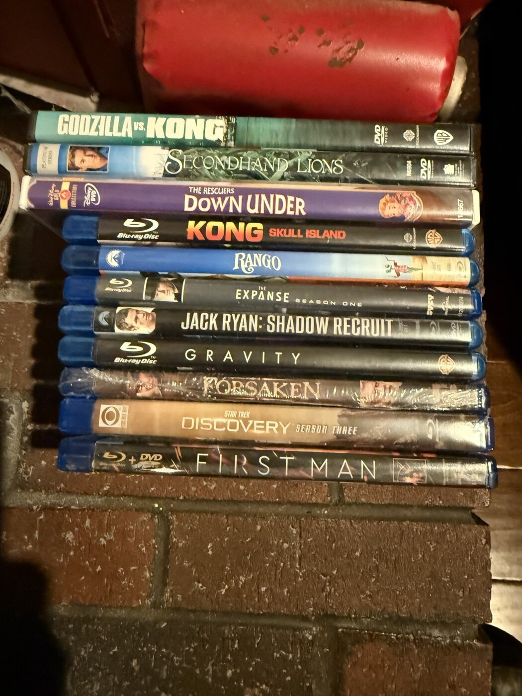
Spines or disc labels visually read in listed order.
- Godzilla vs. Kong · DVD
- Secondhand Lions · DVD
- The Rescuers Down Under · DVD
- Kong: Skull Island · Blu-ray
- Rango · Blu-ray
- The Expanse: Season 1 · Blu-ray
- Jack Ryan: Shadow Recruit · Blu-ray
- Gravity · Blu-ray
- Forsaken · Blu-ray
- Star Trek: Discovery Season 3 · Blu-ray
- First Man · Blu-ray + DVD
IMG_5563.jpeg
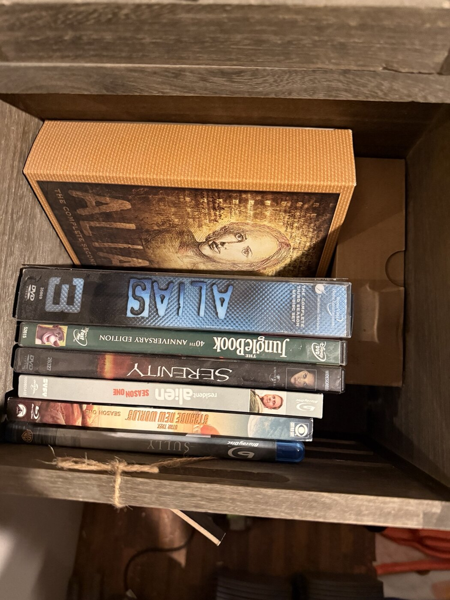
Spines or disc labels visually read in listed order.
- Alias: Season 2 · DVD
- Alias: Season 3 · DVD
- The Jungle Book: 40th Anniversary Edition · DVD
- Serenity · DVD
- Resident Alien: Season 1 · Blu-ray
- Star Trek: Strange New Worlds Season 1 · Blu-ray
- Sully · Blu-ray
IMG_5564.jpeg
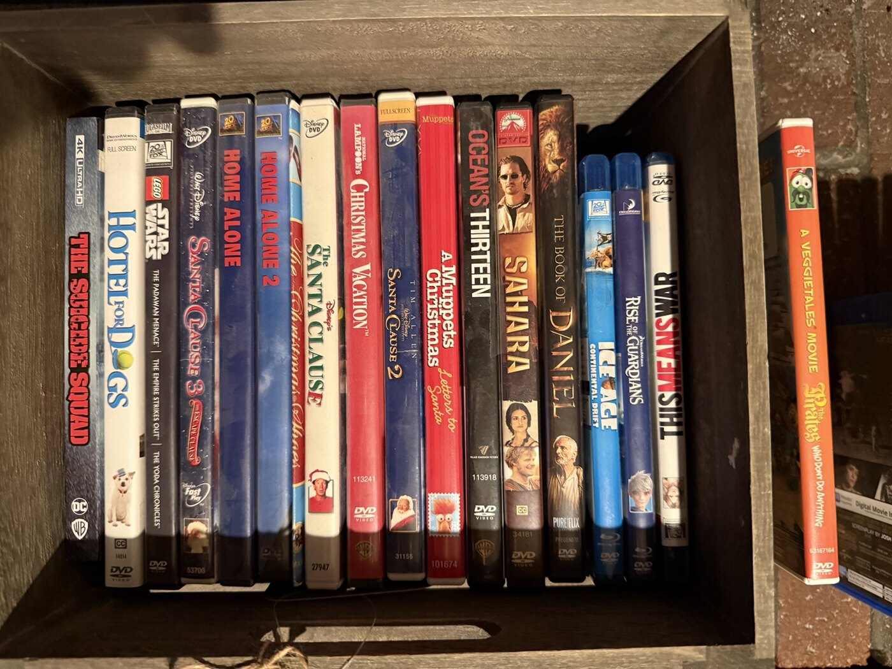
The readable Pirates Who Don’t Do Anything spine at the right edge is included; the unlabeled case beside it is not identifiable.
- The Suicide Squad · 4K UHD
- Hotel for Dogs · DVD
- LEGO Star Wars: The Padawan Menace / The Empire Strikes Out / The Yoda Chronicles · DVD
- The Santa Clause 3: The Escape Clause · DVD
- Home Alone · DVD
- Home Alone 2: Lost in New York · DVD
- The Santa Clause · DVD
- National Lampoon’s Christmas Vacation · DVD
- The Santa Clause 2 · DVD
- A Muppets Christmas: Letters to Santa · DVD
- Ocean’s Thirteen · DVD
- Sahara · DVD
- The Book of Daniel · DVD
- Ice Age: Continental Drift · Blu-ray
- Rise of the Guardians · Blu-ray
- This Means War · Blu-ray + DVD
- The Pirates Who Don’t Do Anything: A VeggieTales Movie · DVD
IMG_5565.jpeg
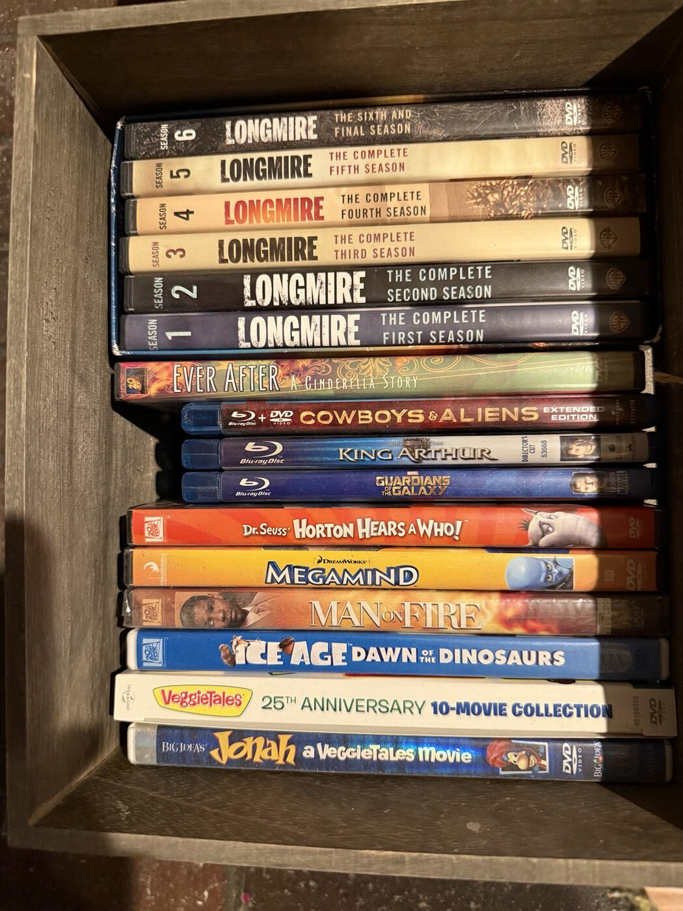
Longmire seasons 1–6 are six inner season packages in one shared outer sleeve; linked by box_group, no extra parent inventory row.
- Longmire: Season 6 · DVD
- Longmire: Season 5 · DVD
- Longmire: Season 4 · DVD
- Longmire: Season 3 · DVD
- Longmire: Season 2 · DVD
- Longmire: Season 1 · DVD
- Ever After: A Cinderella Story · DVD
- Cowboys & Aliens · Blu-ray + DVD
- King Arthur · Blu-ray
- Guardians of the Galaxy · Blu-ray
- Horton Hears a Who! · DVD
- Megamind · DVD
- Man on Fire · DVD
- Ice Age: Dawn of the Dinosaurs · DVD
- VeggieTales: 25th Anniversary 10-Movie Collection · DVD
- Jonah: A VeggieTales Movie · DVD
IMG_5566.jpeg
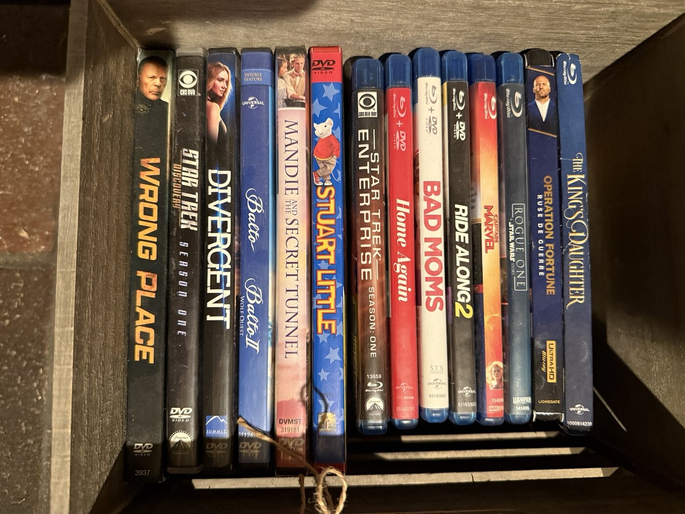
Spines or disc labels visually read in listed order.
- Wrong Place · DVD
- Star Trek: Discovery Season 1 · DVD
- Divergent · DVD
- Balto / Balto II: Wolf Quest · DVD
- Mandie and the Secret Tunnel · DVD
- Stuart Little · DVD
- Star Trek: Enterprise Season 1 · Blu-ray
- Home Again · Blu-ray + DVD
- Bad Moms · Blu-ray + DVD
- Ride Along 2 · Blu-ray + DVD
- Captain Marvel · Blu-ray
- Rogue One: A Star Wars Story · Blu-ray
- Operation Fortune: Ruse de Guerre · 4K UHD
- The King’s Daughter · Blu-ray
IMG_5567.jpeg
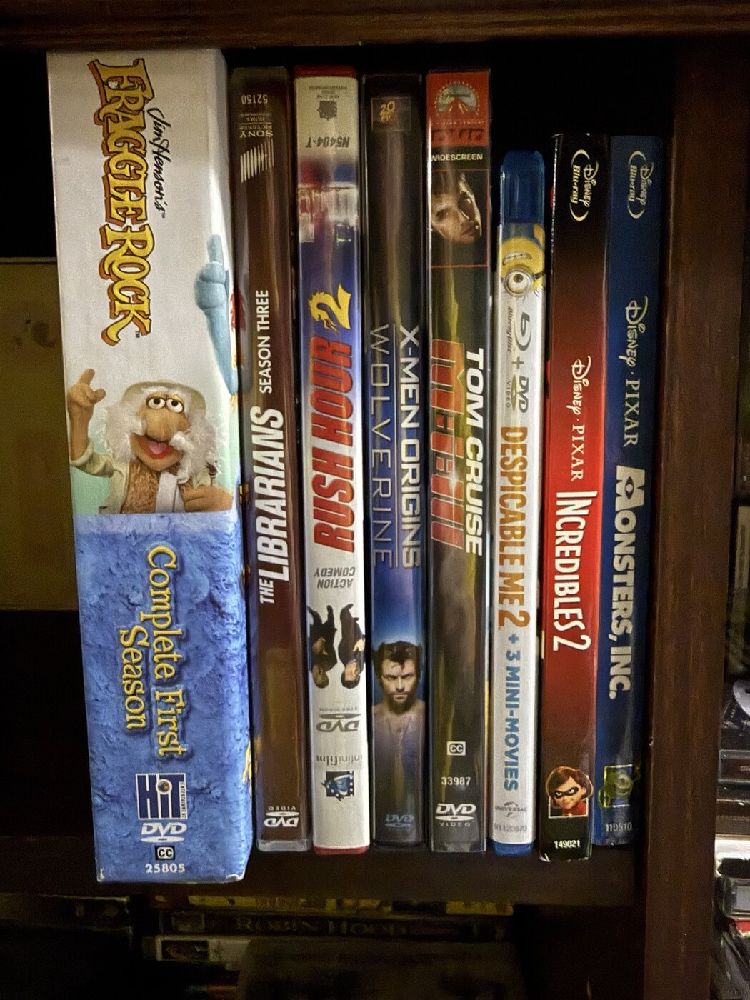
Spines or disc labels visually read in listed order.
- Fraggle Rock: Complete First Season · DVD
- The Librarians: Season 3 · DVD
- Rush Hour 2 · DVD
- X-Men Origins: Wolverine · DVD
- Mission: Impossible III · DVD
- Despicable Me 2 + 3 Mini-Movies · Blu-ray + DVD
- Incredibles 2 · Blu-ray
- Monsters, Inc. · Blu-ray
IMG_5568.jpeg
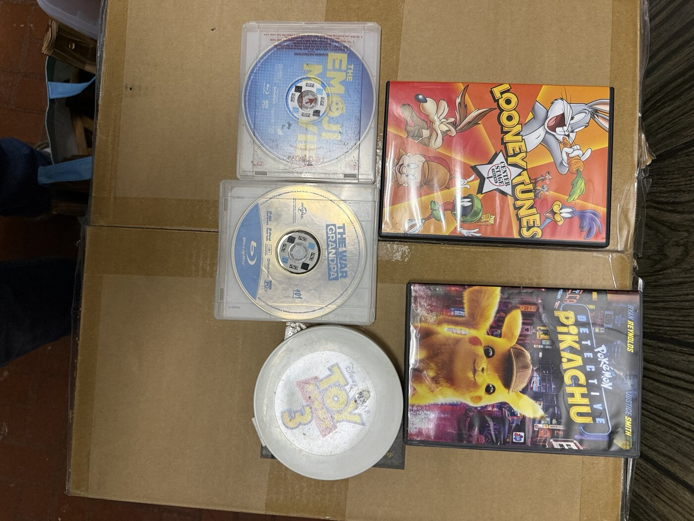
The Emoji Movie and The War with Grandpa show Blu-ray logos on their discs; Detective Pikachu here is a DVD case. A separate Blu-ray is in IMG_5569.
- The Emoji Movie · Blu-ray
- The War with Grandpa · Blu-ray
- Toy Story 3 · DVD
- Looney Tunes: Center Stage Collection · DVD
- Pokémon Detective Pikachu · DVD
IMG_5569.jpeg
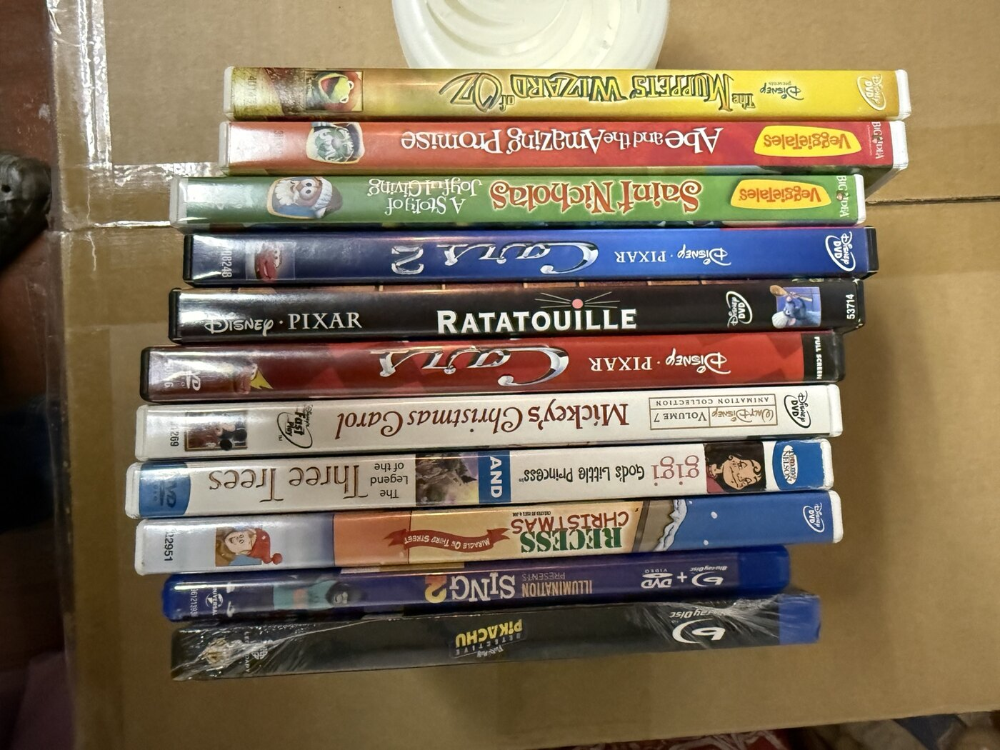
Spines or disc labels visually read in listed order.
- The Muppets’ Wizard of Oz · DVD
- VeggieTales: Abe and the Amazing Promise · DVD
- VeggieTales: Saint Nicholas: A Story of Joyful Giving · DVD
- Cars 2 · DVD
- Ratatouille · DVD
- Cars · DVD
- Walt Disney Animation Collection Vol. 7: Mickey’s Christmas Carol · DVD
- Gigi: God’s Little Princess / The Legend of the Three Trees · DVD
- Recess Christmas: Miracle on Third Street · DVD
- Sing 2 · Blu-ray + DVD
- Pokémon Detective Pikachu · Blu-ray
IMG_5570.jpeg
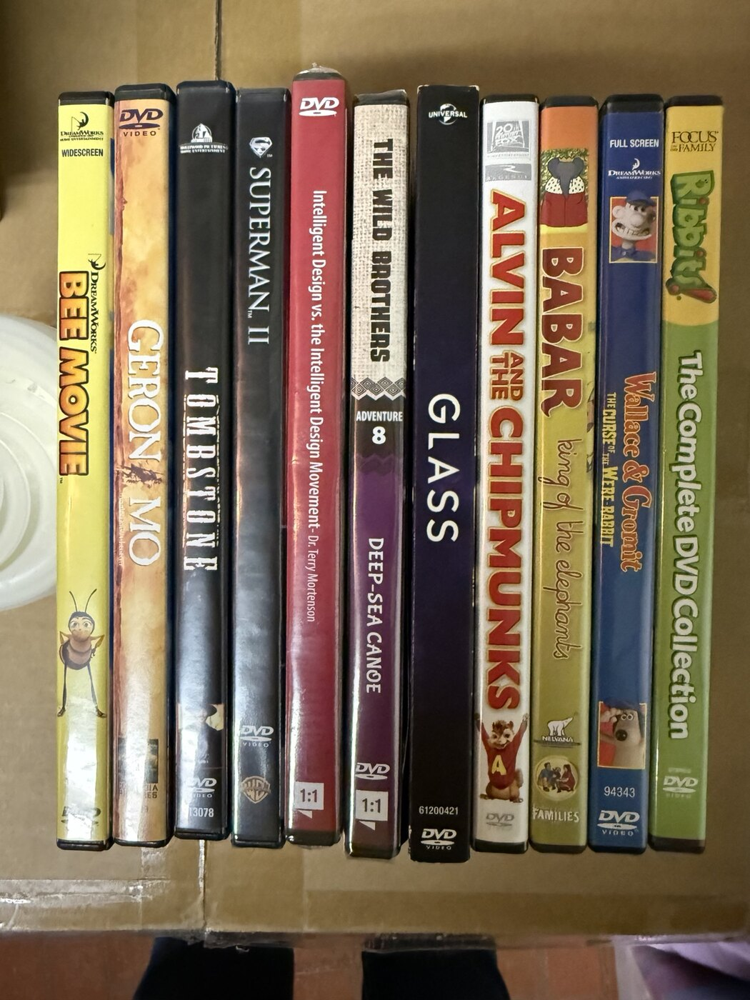
Spines or disc labels visually read in listed order.
- Bee Movie · DVD
- Geronimo: An American Legend · DVD
- Tombstone · DVD
- Superman II · DVD
- Intelligent Design vs. the Intelligent Design Movement · DVD
- The Wild Brothers: Adventure 8 — Deep-Sea Canoe · DVD
- Glass · DVD
- Alvin and the Chipmunks · DVD
- Babar: King of the Elephants · DVD
- Wallace & Gromit: The Curse of the Were-Rabbit · DVD
- Ribbits!: The Complete DVD Collection · DVD
IMG_5571.jpeg
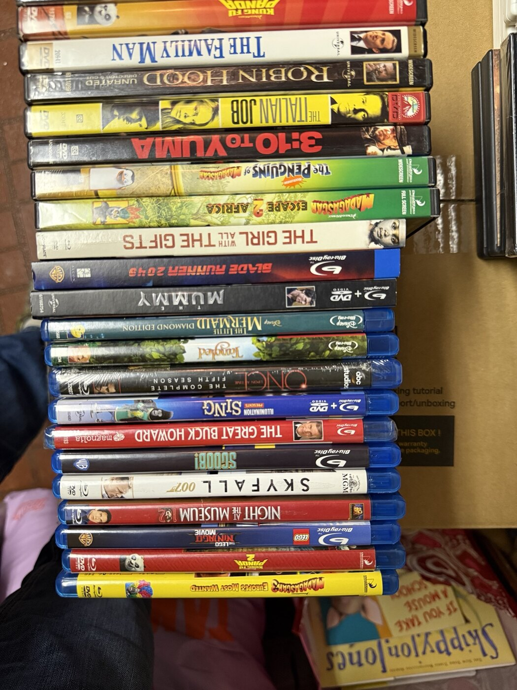
Same stack as IMG_5572; counted once. IMG_5572 additionally reveals Flyboys.
- Kung Fu Panda · DVD
- The Family Man · DVD
- Robin Hood (2010) · DVD
- The Italian Job · DVD
- 3:10 to Yuma · DVD
- The Penguins of Madagascar — Full Screen DVD · DVD
- Madagascar: Escape 2 Africa · DVD
- The Girl with All the Gifts · Blu-ray + DVD
- Blade Runner 2049 · Blu-ray
- The Mummy · Blu-ray + DVD
- The Little Mermaid · Blu-ray
- Tangled · Blu-ray
- Once Upon a Time: Season 5 · Blu-ray
- Sing · Blu-ray + DVD
- The Great Buck Howard · Blu-ray
- Scoob! · Blu-ray
- Skyfall · Blu-ray
- Night at the Museum · Blu-ray
- The LEGO Ninjago Movie · Blu-ray
- Kung Fu Panda 2 · DVD
- Madagascar 3: Europe’s Most Wanted · Blu-ray
IMG_5572.jpeg
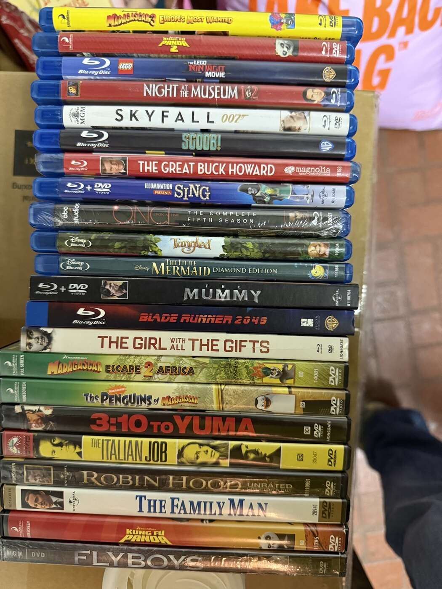
Same stack as IMG_5571; counted once. Full Screen Penguins DVD differs from the Widescreen edition in IMG_5578.
- Madagascar 3: Europe’s Most Wanted · Blu-ray
- Kung Fu Panda 2 · DVD
- The LEGO Ninjago Movie · Blu-ray
- Night at the Museum · Blu-ray
- Skyfall · Blu-ray
- Scoob! · Blu-ray
- The Great Buck Howard · Blu-ray
- Sing · Blu-ray + DVD
- Once Upon a Time: Season 5 · Blu-ray
- Tangled · Blu-ray
- The Little Mermaid · Blu-ray
- The Mummy · Blu-ray + DVD
- Blade Runner 2049 · Blu-ray
- The Girl with All the Gifts · Blu-ray + DVD
- Madagascar: Escape 2 Africa · DVD
- The Penguins of Madagascar — Full Screen DVD · DVD
- 3:10 to Yuma · DVD
- The Italian Job · DVD
- Robin Hood (2010) · DVD
- The Family Man · DVD
- Kung Fu Panda · DVD
- Flyboys · DVD
IMG_5573.jpeg
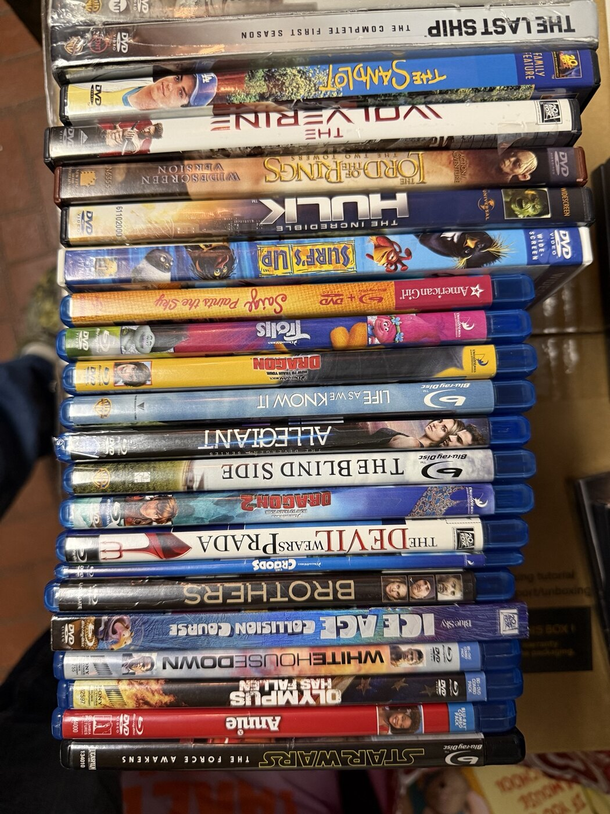
A case is partly clipped at the upper edge beyond The Last Ship; no readable title, so no invented entry.
- The Last Ship: Season 1 · DVD
- The Sandlot · DVD
- The Wolverine · DVD
- The Lord of the Rings: The Two Towers · DVD
- The Incredible Hulk · DVD
- Surf’s Up · DVD
- Saige Paints the Sky · Blu-ray + DVD
- Trolls · Blu-ray
- How to Train Your Dragon · Blu-ray
- Life as We Know It · Blu-ray
- Allegiant · Blu-ray
- The Blind Side · Blu-ray
- How to Train Your Dragon 2 · Blu-ray
- The Devil Wears Prada · Blu-ray
- The Croods · Blu-ray
- Brothers · Blu-ray
- Ice Age: Collision Course · DVD
- White House Down · Blu-ray + DVD
- Olympus Has Fallen · Blu-ray + DVD
- Annie · Blu-ray + DVD
- Star Wars: The Force Awakens · Blu-ray
IMG_5574.jpeg
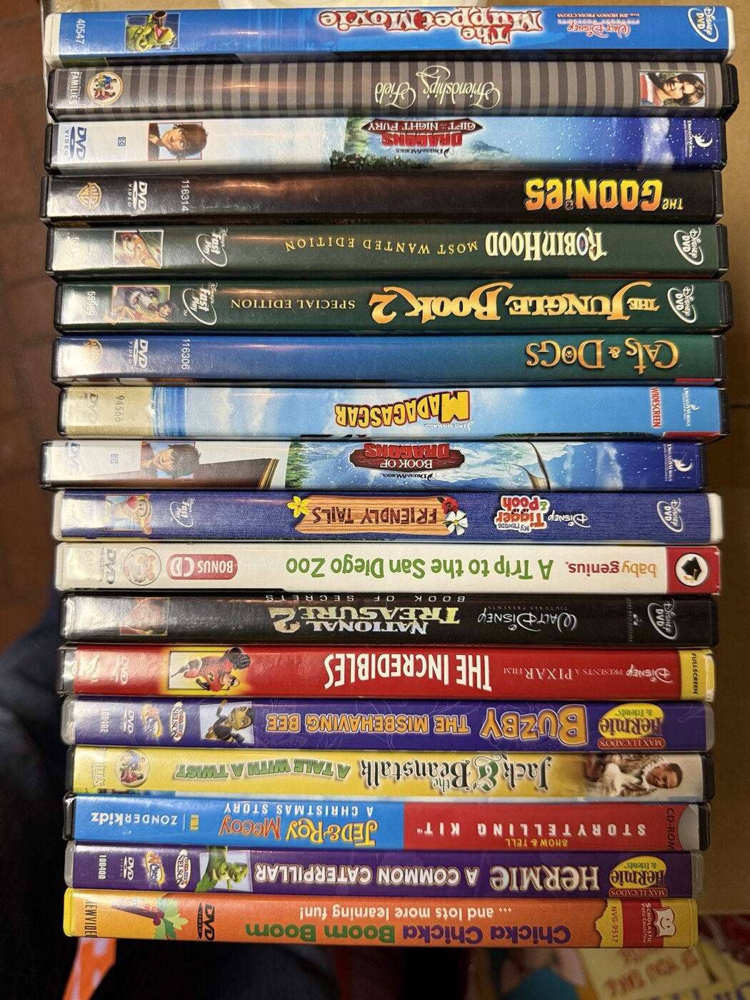
Jed & Roy McCoy package is a CD-ROM storytelling kit, recorded as Other rather than a movie. The Muppet Movie edition code 40547 differs from code 11068 in IMG_5578.
- The Muppet Movie · DVD
- Friendship’s Field · DVD
- How to Train Your Dragon: Gift of the Night Fury · DVD
- The Goonies · DVD
- Robin Hood: Most Wanted Edition · DVD
- The Jungle Book 2 · DVD
- Cats & Dogs · DVD
- Madagascar · DVD
- Dragons: Book of Dragons · DVD
- My Friends Tigger & Pooh: Friendly Tails · DVD
- A Trip to the San Diego Zoo · DVD
- National Treasure 2: Book of Secrets · DVD
- The Incredibles · DVD
- Hermie & Friends: Buzby the Misbehaving Bee · DVD
- Jack and the Beanstalk: A Tale with a Twist · DVD
- Jed & Roy McCoy: A Christmas Story — Storytelling Kit · CD-ROM
- Hermie: A Common Caterpillar · DVD
- Chicka Chicka Boom Boom …and Lots More Learning Fun! · DVD
IMG_5575.jpeg
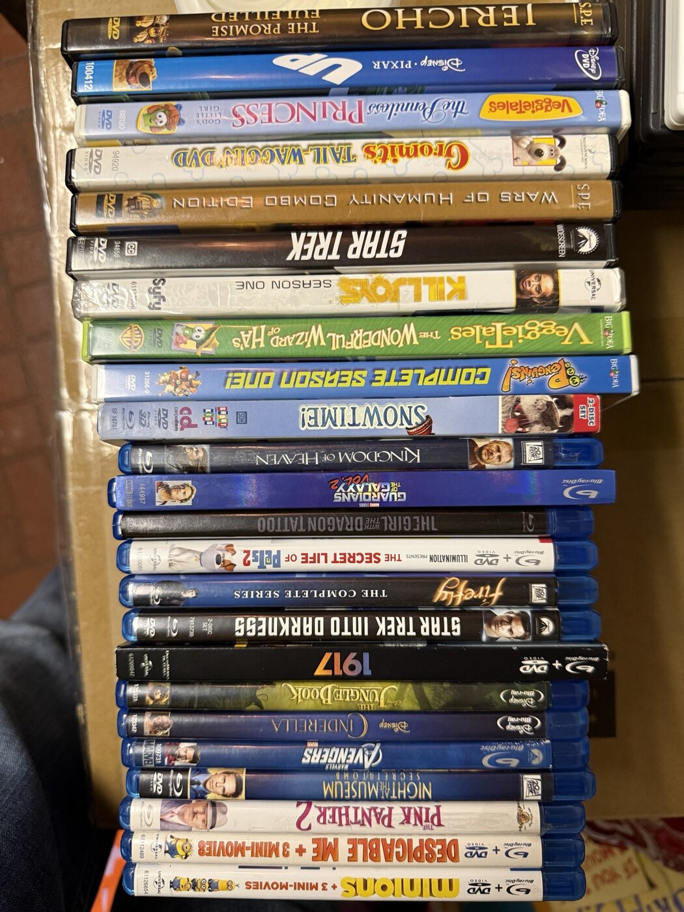
Cinderella shows Lily James; Jungle Book shows live-action Mowgli. 1917 is clearly printed. No film identity is inferred for the Wars of Humanity educational DVD beyond its printed title.
- Jericho: The Promise Fulfilled · DVD
- Up · DVD
- VeggieTales: The Penniless Princess · DVD
- Gromit’s Tail-Waggin’ DVD · DVD
- Wars of Humanity: Combo Edition · DVD
- Star Trek (2009) · DVD
- Killjoys: Season 1 · DVD
- VeggieTales: The Wonderful Wizard of Ha’s · DVD
- 3-2-1 Penguins!: Complete Season 1 · DVD
- Snowtime! · DVD
- Kingdom of Heaven · Blu-ray
- Guardians of the Galaxy Vol. 2 · Blu-ray
- The Girl with the Dragon Tattoo · Blu-ray
- The Secret Life of Pets 2 · Blu-ray + DVD
- Firefly: The Complete Series · Blu-ray
- Star Trek Into Darkness · Blu-ray + DVD
- 1917 · Blu-ray + DVD
- The Jungle Book · Blu-ray
- Cinderella · Blu-ray
- The Avengers · Blu-ray
- Night at the Museum: Secret of the Tomb · Blu-ray + DVD
- The Pink Panther 2 · Blu-ray
- Despicable Me + 3 Mini-Movies · Blu-ray + DVD
- Minions + 3 Mini-Movies · Blu-ray + DVD
IMG_5576.jpeg
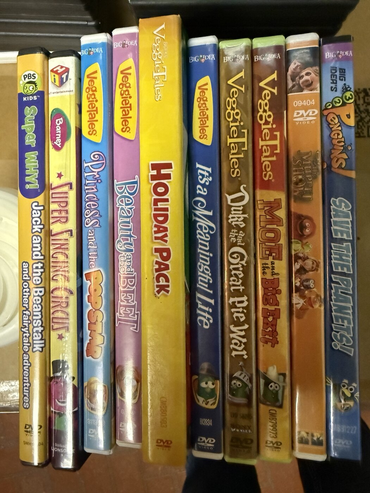
Spines or disc labels visually read in listed order.
- Super WHY!: Jack and the Beanstalk and Other Fairytale Adventures · DVD
- Barney: Super Singing Circus · DVD
- VeggieTales: Princess and the Popstar · DVD
- VeggieTales: Beauty and the Beet · DVD
- VeggieTales: Holiday Pack · DVD
- VeggieTales: It’s a Meaningful Life · DVD
- VeggieTales: Duke and the Great Pie War · DVD
- VeggieTales: Moe and the Big Exit · DVD
- VeggieTales: Lyle the Kindly Viking · DVD
- 3-2-1 Penguins!: Save the Planets! · DVD
IMG_5577.jpeg
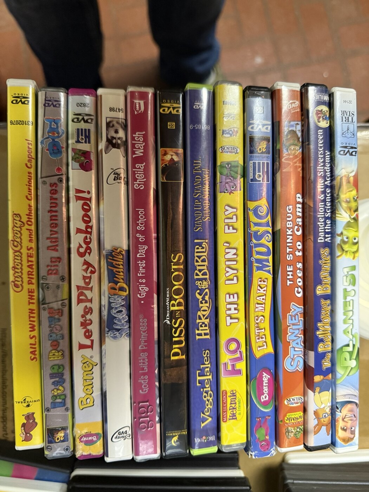
Spines or disc labels visually read in listed order.
- Curious George: Sails with the Pirates · DVD
- Little Robots: Big Adventures · DVD
- Barney: Let’s Play School · DVD
- Snow Buddies · DVD
- Sheila Walsh: Gigi God’s Little Princess First Day of School · DVD
- Puss in Boots · DVD
- VeggieTales: Heroes of the Bible — Stand Up, Stand Tall, Stand Strong! · DVD
- Hermie & Friends: Flo the Lyin’ Fly · DVD
- Barney: Let’s Make Music · DVD
- Hermie & Friends: Stanley the Stinkbug Goes to Camp · DVD
- The Bellflower Bunnies: Dandelion & the Silver Screen / At the Science Academy · DVD
- Planet 51 · DVD
IMG_5578.jpeg
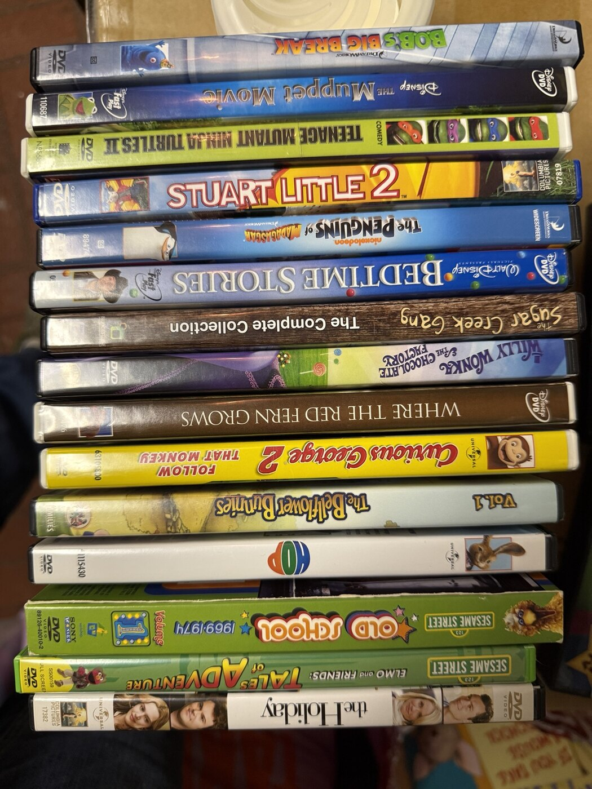
Widescreen Penguins DVD differs from Full Screen copy in IMG_5571/5572. Muppet Movie product code 11068 differs from 40547 in IMG_5574.
- Bob’s Big Break · DVD
- The Muppet Movie — alternate DVD edition · DVD
- Teenage Mutant Ninja Turtles II: The Secret of the Ooze · DVD
- Stuart Little 2 · DVD
- The Penguins of Madagascar · DVD
- Bedtime Stories · DVD
- The Sugar Creek Gang: Complete Collection · DVD
- Willy Wonka & the Chocolate Factory · DVD
- Where the Red Fern Grows · DVD
- Curious George 2: Follow That Monkey · DVD
- The Bellflower Bunnies Vol. 1 · DVD
- Hop · DVD
- Sesame Street: Old School — Volume 1 (1969–1974) · DVD
- Sesame Street: Elmo and Friends Tales of Adventure · DVD
- The Holiday · DVD
IMG_5579.jpeg
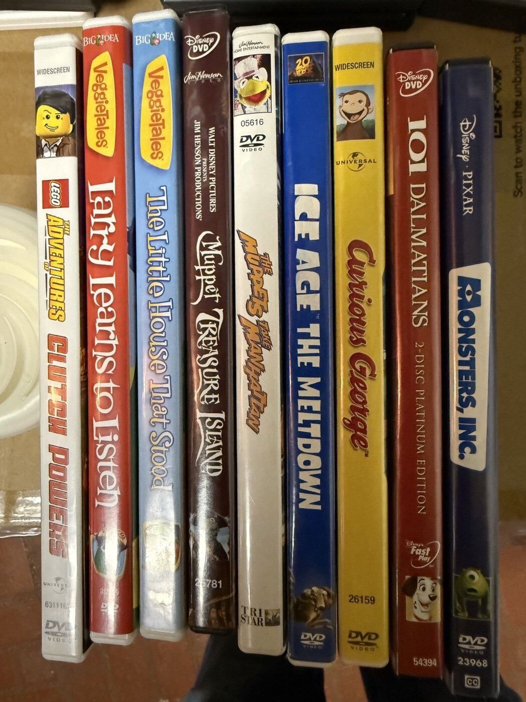
Same nine-package group as IMG_5580; counted once.
- LEGO Adventures: Clutch Powers · DVD
- Larry Learns to Listen · DVD
- The Little House That Stood · DVD
- Muppet Treasure Island · DVD
- The Muppets Take Manhattan · DVD
- Ice Age: The Meltdown · DVD
- Curious George · DVD
- 101 Dalmatians — 2-Disc Platinum Edition · DVD
- Monsters, Inc. · DVD
IMG_5580.jpeg
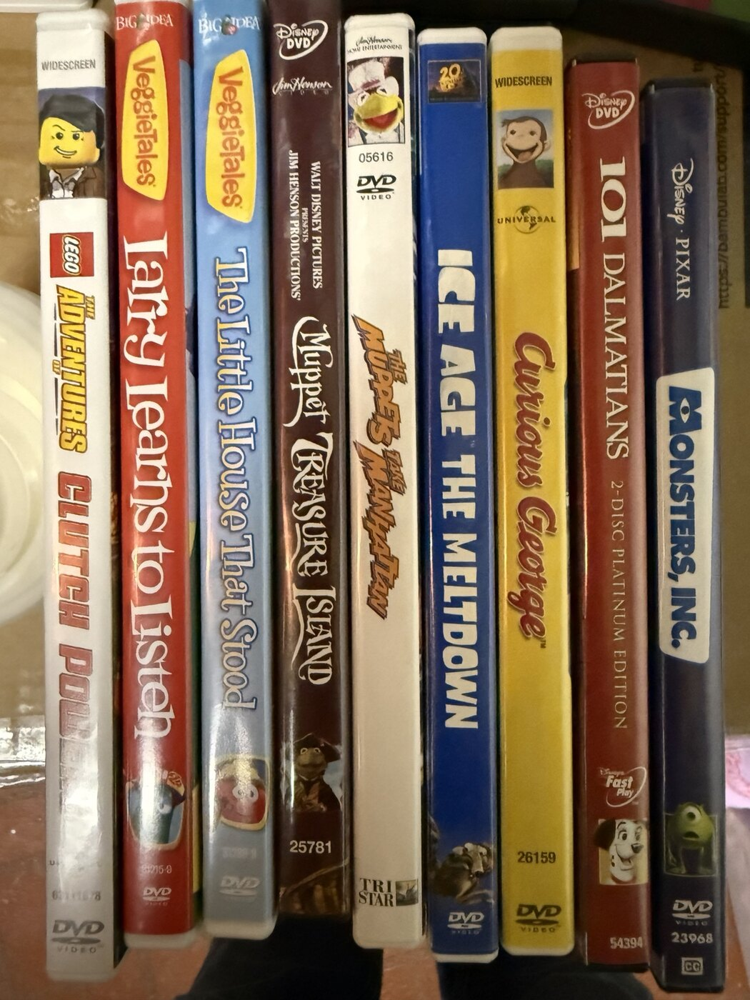
Repeat view of IMG_5579, not nine additional copies.
- LEGO Adventures: Clutch Powers · DVD
- Larry Learns to Listen · DVD
- The Little House That Stood · DVD
- Muppet Treasure Island · DVD
- The Muppets Take Manhattan · DVD
- Ice Age: The Meltdown · DVD
- Curious George · DVD
- 101 Dalmatians — 2-Disc Platinum Edition · DVD
- Monsters, Inc. · DVD
IMG_5581.jpeg
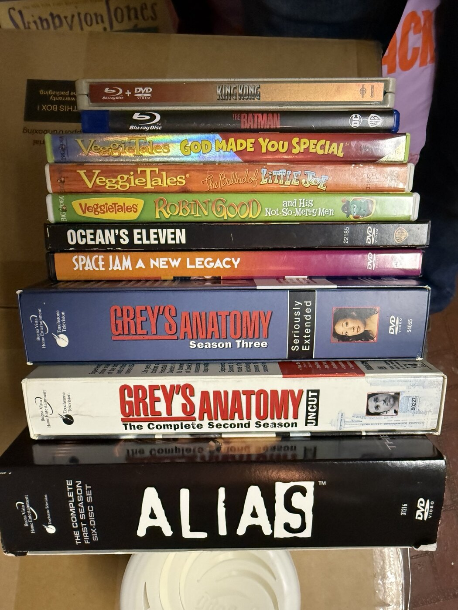
Spines or disc labels visually read in listed order.
- King Kong · Blu-ray + DVD
- The Batman · Blu-ray
- God Made You Special · DVD
- The Ballad of Little Joe · DVD
- Robin Good and His Not-So-Merry Men · DVD
- Ocean's Eleven · DVD
- Space Jam: A New Legacy · DVD
- Grey's Anatomy: Season 3 · DVD
- Grey's Anatomy: Season 2 · DVD
- Alias: Season 1 · DVD
IMG_5582.jpeg
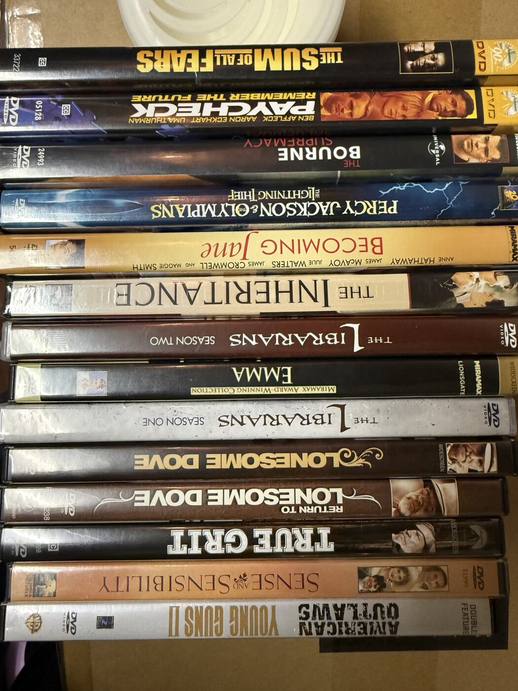
Spines or disc labels visually read in listed order.
- The Sum of All Fears · DVD
- Paycheck · DVD
- The Bourne Supremacy · DVD
- Percy Jackson & the Olympians: The Lightning Thief · DVD
- Becoming Jane · DVD
- The Inheritance · DVD
- The Librarians: Season 2 · DVD
- Emma · DVD
- The Librarians: Season 1 · DVD
- Lonesome Dove · DVD
- Return to Lonesome Dove · DVD
- True Grit · DVD
- Sense and Sensibility · DVD
- American Outlaws / Young Guns II — Double Feature · DVD
IMG_5583.jpeg
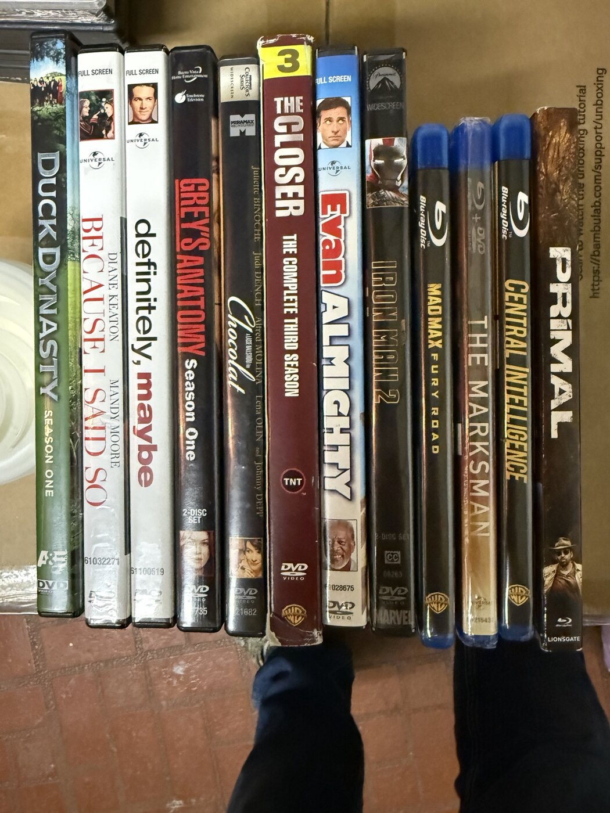
Spines or disc labels visually read in listed order.
- Duck Dynasty: Season 1 · DVD
- Because I Said So · DVD
- Definitely, Maybe · DVD
- Grey’s Anatomy: Season 1 · DVD
- Chocolat · DVD
- The Closer: Season 3 · DVD
- Evan Almighty · DVD
- Iron Man 2 · DVD
- Mad Max: Fury Road · Blu-ray
- The Marksman · Blu-ray + DVD
- Central Intelligence · Blu-ray
- Primal · Blu-ray
IMG_5584.jpeg
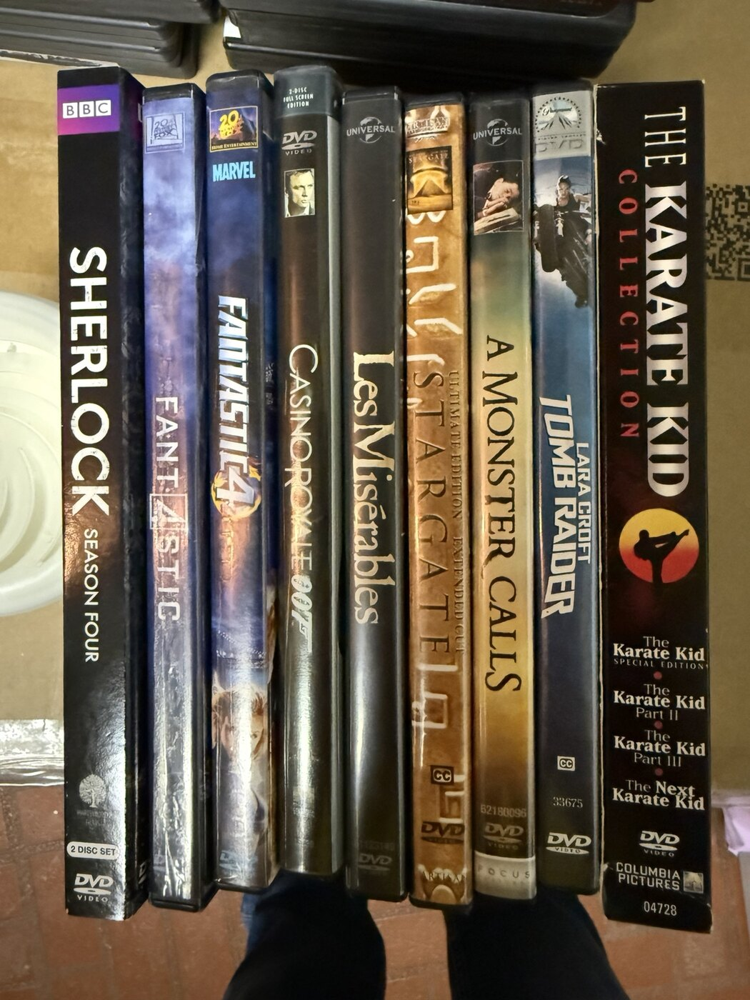
Spines or disc labels visually read in listed order.
- Sherlock: Season 4 · DVD
- Fantastic Four (2015) · DVD
- Fantastic Four · DVD
- Casino Royale · DVD
- Les Misérables · DVD
- Stargate: Ultimate Edition — Extended Cut · DVD
- A Monster Calls · DVD
- Lara Croft: Tomb Raider · DVD
- The Karate Kid Collection · DVD
IMG_5585.jpeg
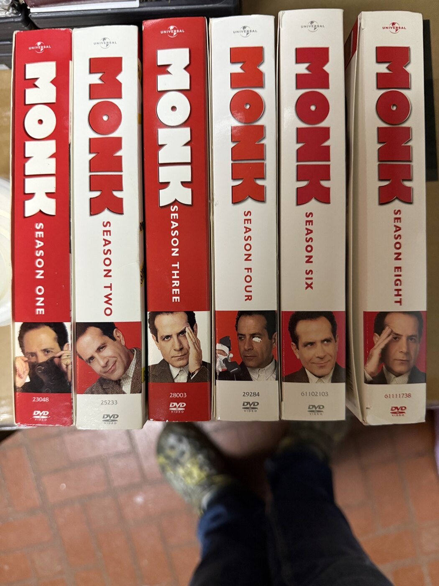
Visible Monk seasons are 1, 2, 3, 4, 6, 8. Season 5 is separately visible in IMG_5587.
- Monk: Season 1 · DVD
- Monk: Season 2 · DVD
- Monk: Season 3 · DVD
- Monk: Season 4 · DVD
- Monk: Season 6 · DVD
- Monk: Season 8 · DVD
IMG_5586.jpeg
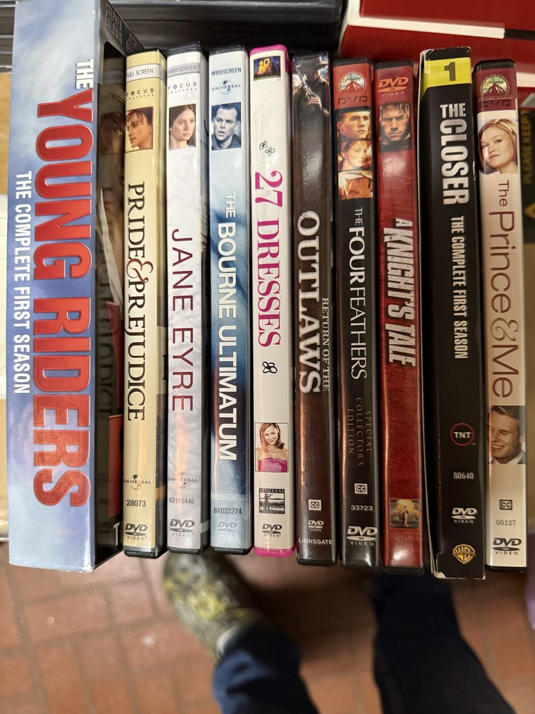
A narrow red/black spine behind The Young Riders is obscured; no invented title.
- The Young Riders: Season 1 · DVD
- Pride & Prejudice · DVD
- Jane Eyre · DVD
- The Bourne Ultimatum · DVD
- 27 Dresses · DVD
- Return of the Outlaws · DVD
- The Four Feathers · DVD
- A Knight’s Tale · DVD
- The Closer: Season 1 · DVD
- The Prince & Me · DVD
IMG_5587.jpeg
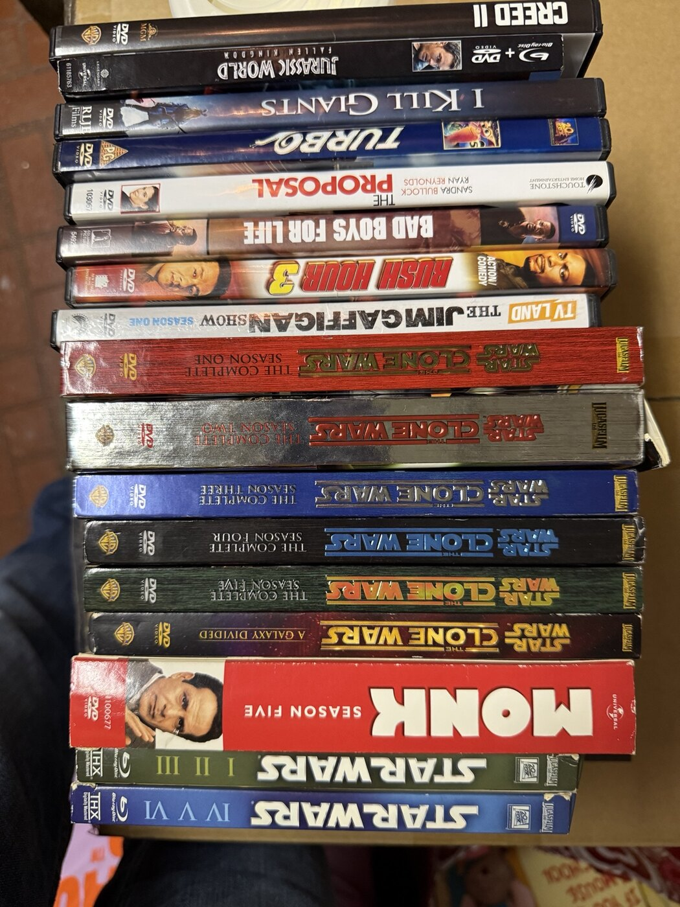
Five individually packaged Clone Wars seasons replace the single aggregate catalog row. Monk season 5 remains distinct.
- Creed II · DVD
- Jurassic World: Fallen Kingdom · Blu-ray + DVD
- I Kill Giants · DVD
- Turbo · DVD
- The Proposal · DVD
- Bad Boys for Life · DVD
- Rush Hour 3 · DVD
- The Jim Gaffigan Show: Season 1 · DVD
- Star Wars: The Clone Wars: Season 1 · DVD
- Star Wars: The Clone Wars: Season 2 · DVD
- Star Wars: The Clone Wars: Season 3 · DVD
- Star Wars: The Clone Wars: Season 4 · DVD
- Star Wars: The Clone Wars: Season 5 · DVD
- Star Wars: The Clone Wars: A Galaxy Divided · DVD
- Monk: Season 5 · DVD
- Star Wars Episodes I–III · Blu-ray
- Star Wars Episodes IV–VI · Blu-ray
IMG_5588.jpeg
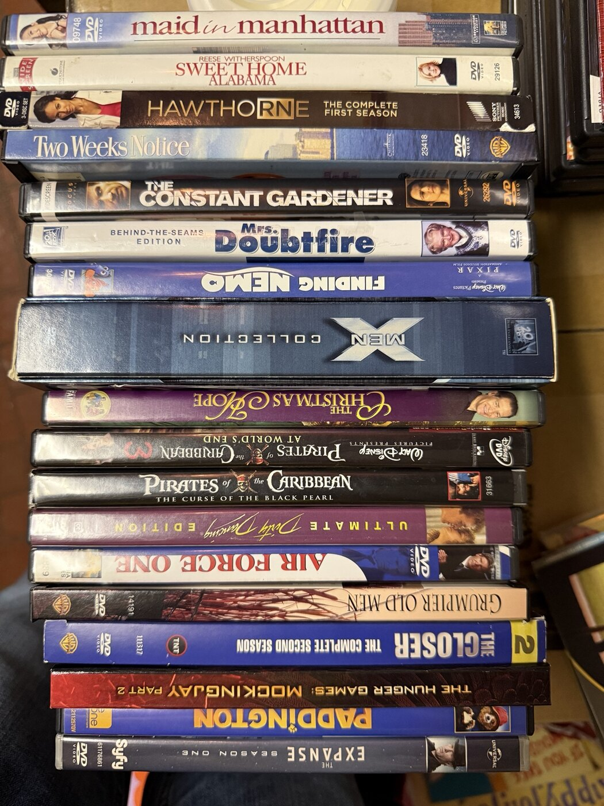
X-Men Collection contents cannot be read on the spine; no individual films invented.
- Maid in Manhattan · DVD
- Sweet Home Alabama · DVD
- HawthoRNe: Season 1 · DVD
- Two Weeks Notice · DVD
- The Constant Gardener · DVD
- Mrs. Doubtfire · DVD
- Finding Nemo · DVD
- X-Men Collection · DVD
- The Christmas Hope · DVD
- Pirates of the Caribbean: At World’s End · DVD
- Pirates of the Caribbean: The Curse of the Black Pearl · DVD
- Dirty Dancing — Ultimate Edition · DVD
- Air Force One · DVD
- Grumpy Old Men · DVD
- The Closer: Season 2 · DVD
- The Hunger Games: Mockingjay Part 2 · DVD
- Paddington · DVD
- The Expanse: Season 1 · DVD
IMG_5589.jpeg
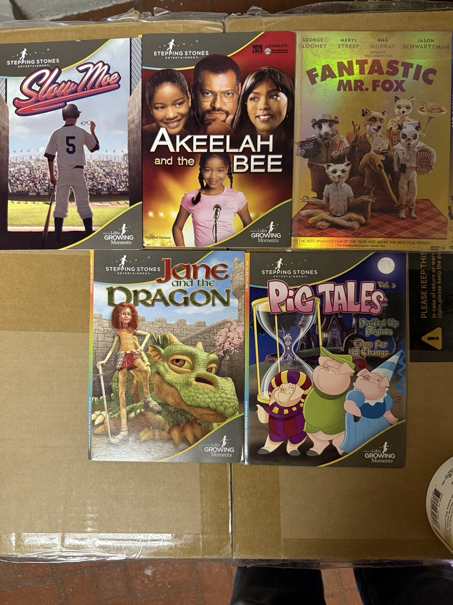
Spines or disc labels visually read in listed order.
- Slow Moe · DVD
- Akeelah and the Bee · DVD
- Fantastic Mr. Fox · DVD
- Jane and the Dragon · DVD
- Pig Tales Vol. 3: Puffed Up Piglets / Time for a Change · DVD
IMG_5590.jpeg
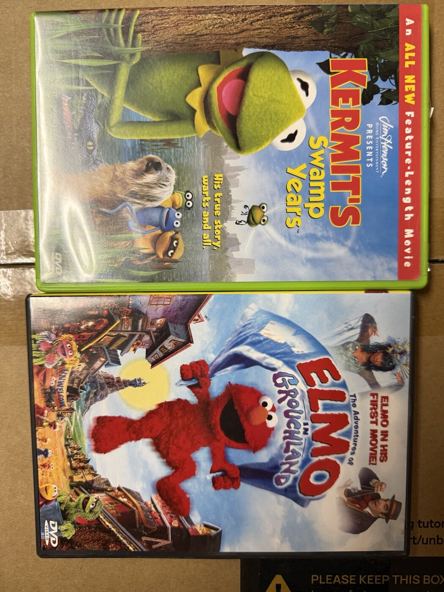
Spines or disc labels visually read in listed order.
- Kermit’s Swamp Years · DVD
- The Adventures of Elmo in Grouchland · DVD
IMG_5591.jpeg
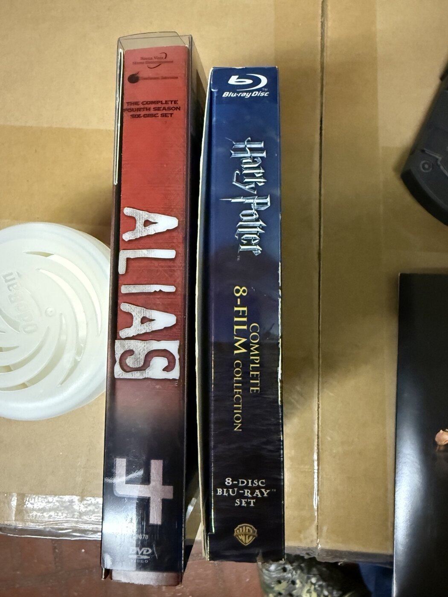
Spines or disc labels visually read in listed order.
- Alias: Season 4 · DVD
- Harry Potter: Complete 8-Film Collection · Blu-ray
IMG_5606.jpeg
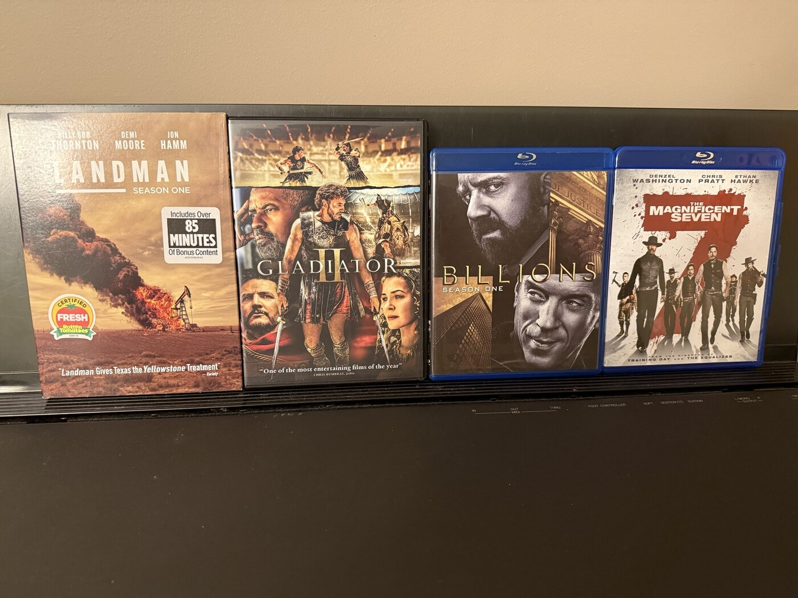
Supplementary ZIP, reviewed separately from the original 30 photographs.
- Landman: Season 1 · DVD
- Gladiator II · DVD
- Billions: Season 1 · Blu-ray
- The Magnificent Seven · Blu-ray
IMG_5607.jpeg
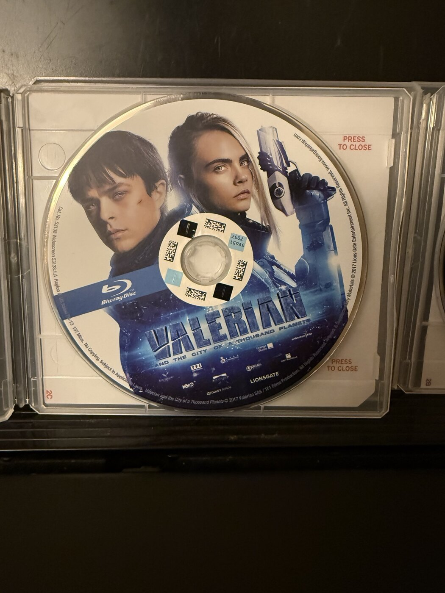
Supplementary ZIP, reviewed separately from the original 30 photographs.
- Valerian and the City of a Thousand Planets · Blu-ray
IMG_5608.jpeg
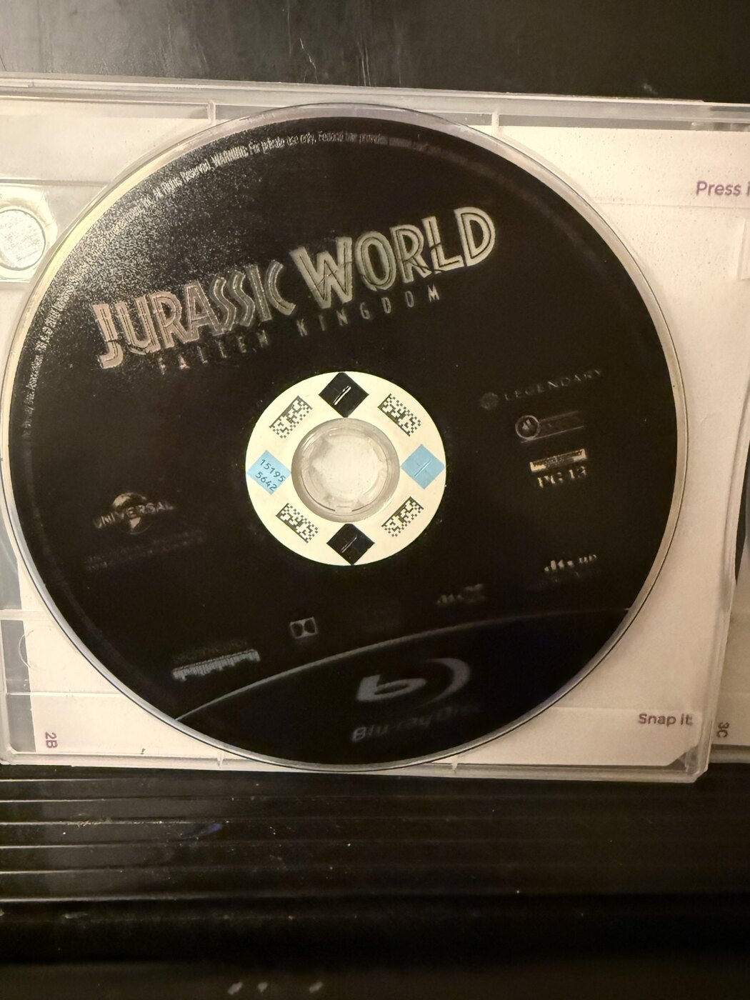
Supplementary ZIP, reviewed separately from the original 30 photographs.
- Jurassic World: Fallen Kingdom · Blu-ray
IMG_5609.jpeg
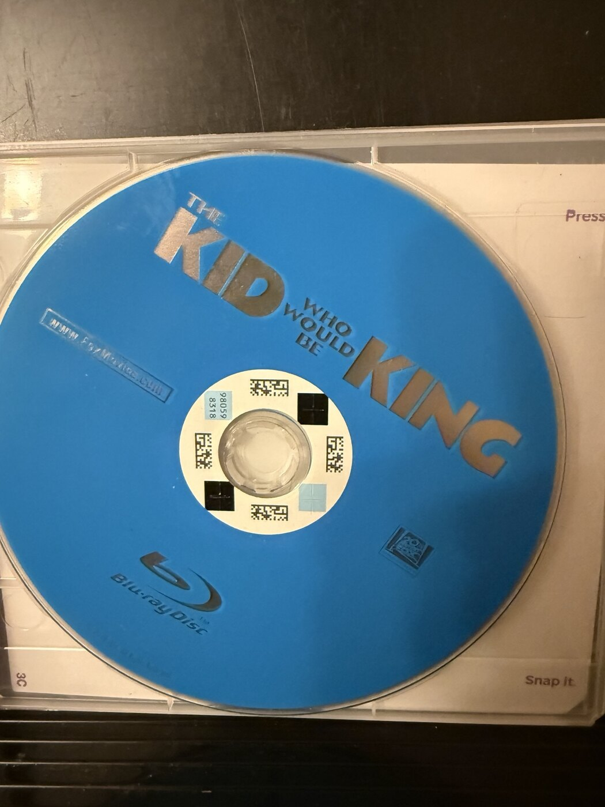
Supplementary ZIP, reviewed separately from the original 30 photographs.
- The Kid Who Would Be King · Blu-ray
IMG_5610.jpeg
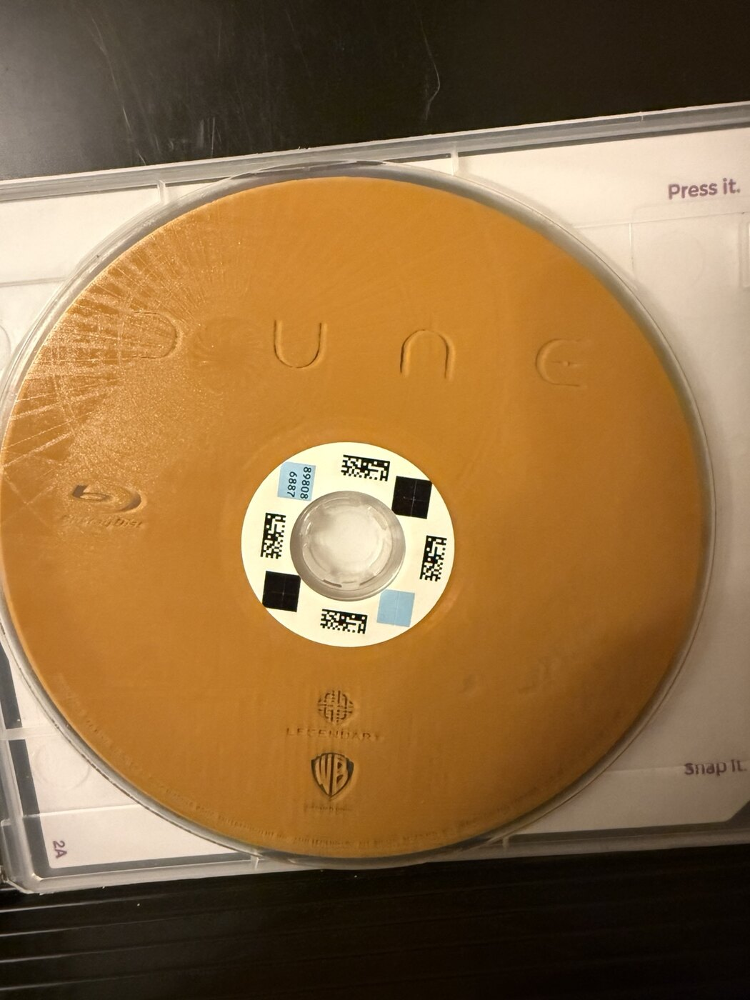
Supplementary ZIP, reviewed separately from the original 30 photographs.
- Dune · Blu-ray
IMG_5611.jpeg
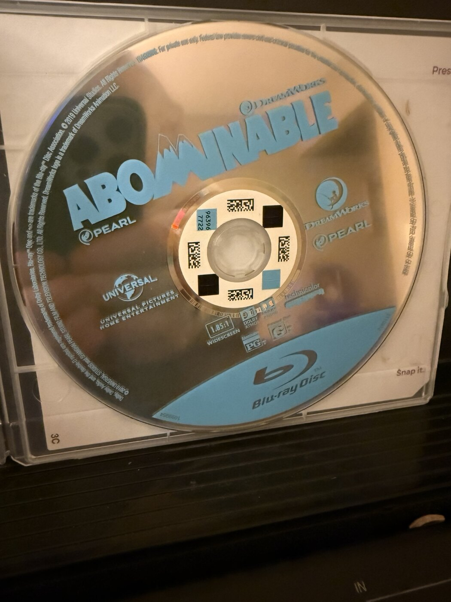
Supplementary ZIP, reviewed separately from the original 30 photographs.
- Abominable · Blu-ray